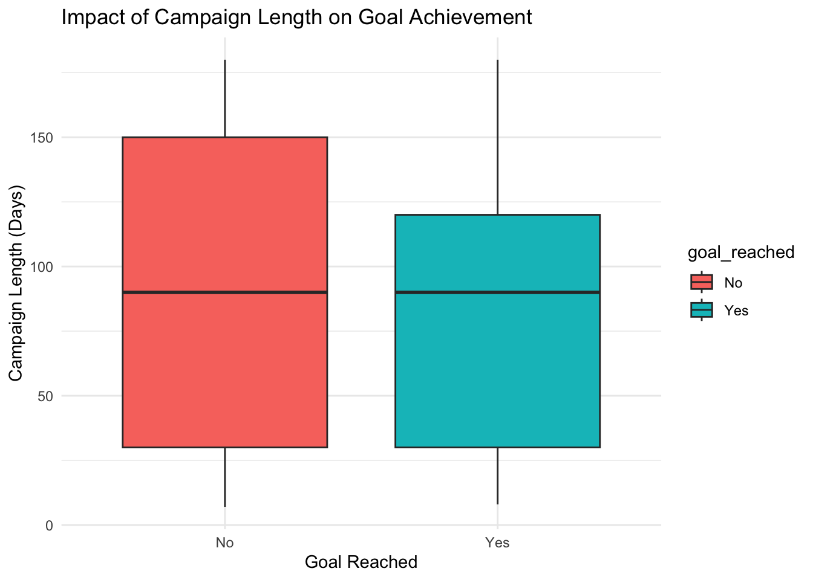
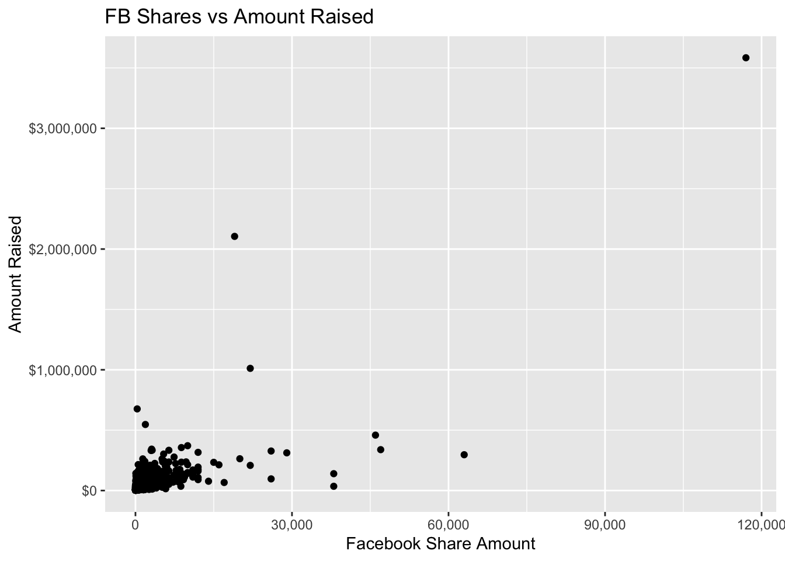
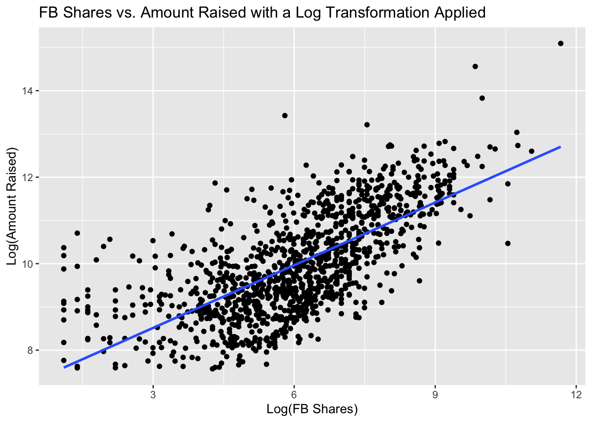
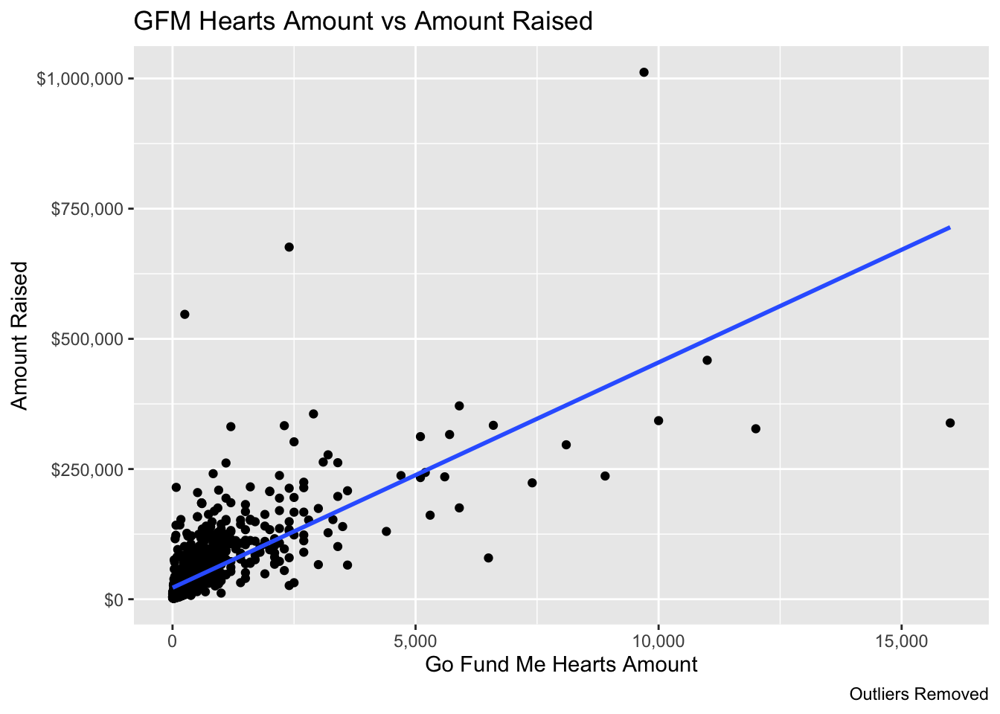
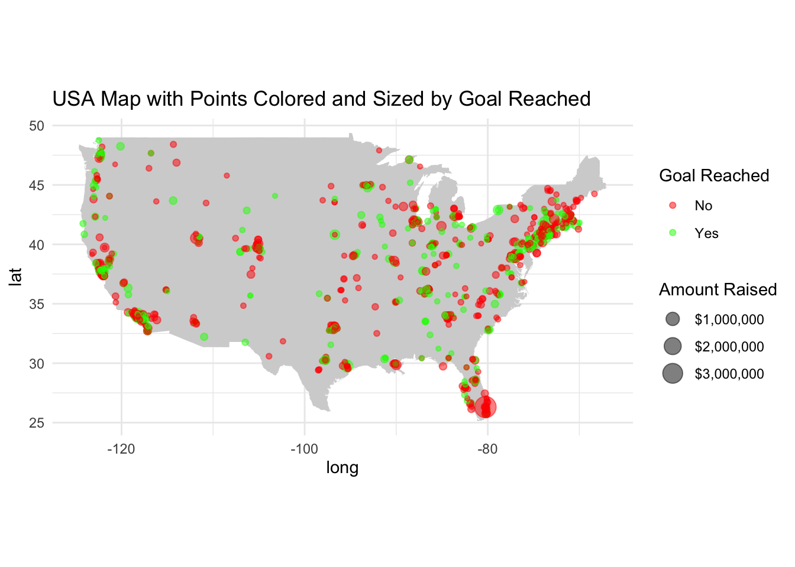
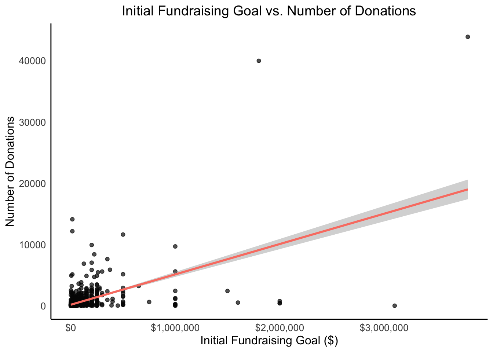
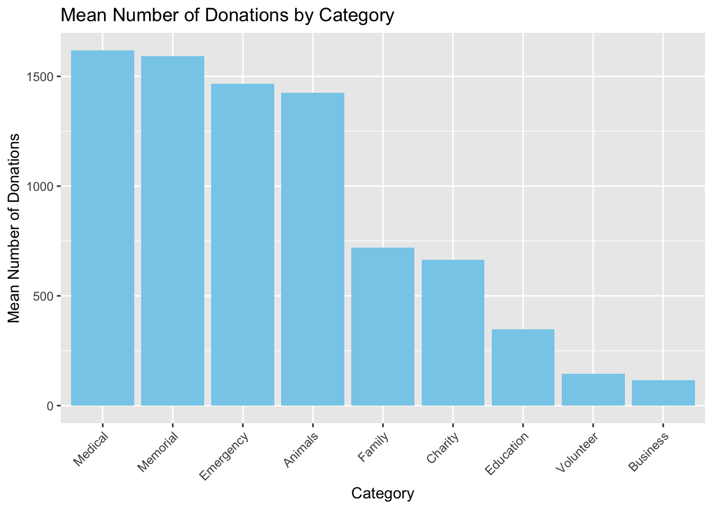
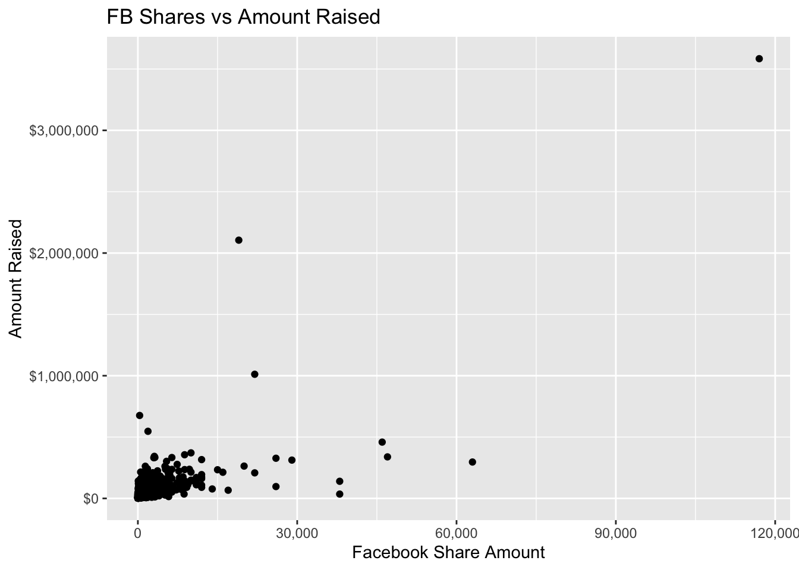
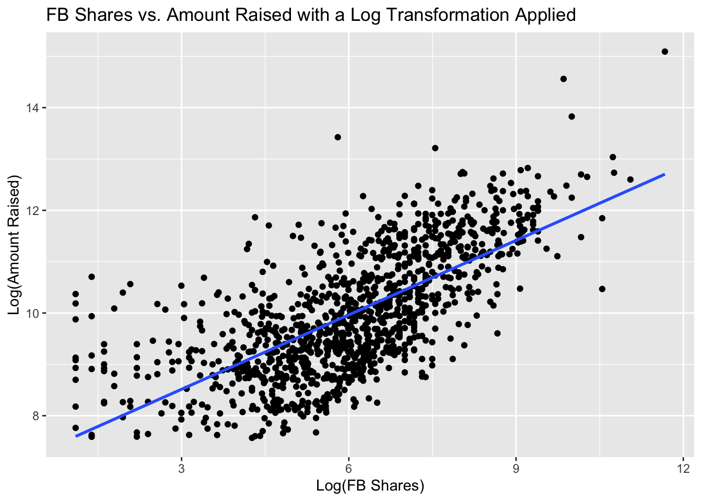
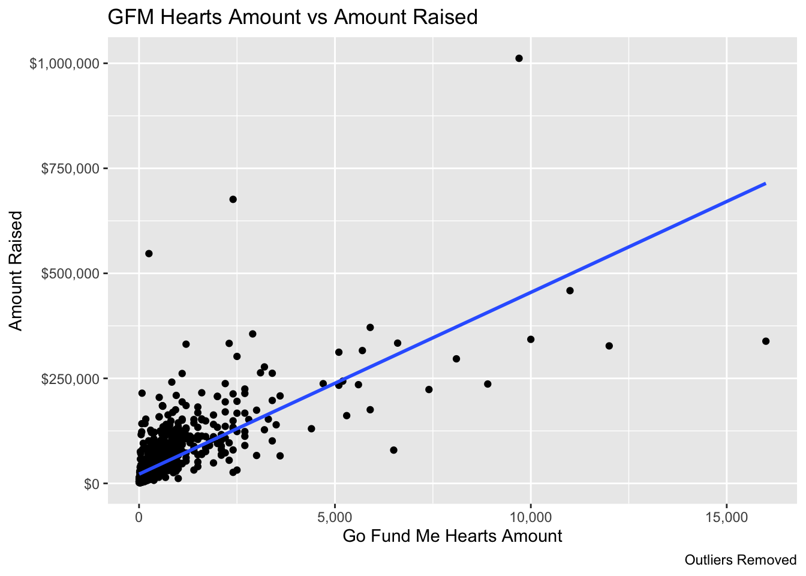

randomForest 4.7-1.1
Type rfNews() to see new features/changes/bug fixes.
Attaching package: 'randomForest'
The following object is masked from 'package:dplyr':
combine
The following object is masked from 'package:ggplot2':
margin
library(caTools)library(maps)
Attaching package: 'maps'
The following object is masked from 'package:purrr':
map
library(scales)
Attaching package: 'scales'
The following object is masked from 'package:syuzhet':
rescale
The following object is masked from 'package:purrr':
discard
The following object is masked from 'package:readr':
col_factor
gfm_data <-read.csv("data/gfm_cleaned_data.csv")
Data Analysis Components:
Fundraising Goals and Donor Engagement
How do different initial fundraising goals impact the number of donations received and donor engagement on GoFundMe?”
Do campaigns with higher initial fundraising goals tend to receive more donations, or do more modest goals attract greater donor engagement?
To what extent do campaigns with personalized stories or unique appeals attract more donors and achieve higher fundraising goals compared to campaigns with generic messages?
Social Media Pattern & Geographical Pattern
What is the correlation between social media engagement metrics (likes, shares, comments) and the amount of funds raised in GoFundMe campaigns?”
Are there discernible geographic patterns in campaign success on GoFundMe? Do campaigns in specific regions or cities tend to achieve higher fundraising goals?
Time analysis:
How does the length of the fundraising campaign impact its success? Are longer or shorter campaigns more effective in reaching their funding goals?’
Time Analysis:
#was the goal reached or not?gfm_data$goal_reached <-ifelse(gfm_data$amount_raised >=gfm_data$goal, "Yes", "No")#Creating time analysis dataset time_analysis <-select(gfm_data, category, position, amount_raised, goal, number_of_donators, campaign_length_days, goal_reached)#clean dataset time_analysis <- time_analysis[complete.cases(time_analysis$campaign_length_days, time_analysis$goal_reached), ]#graph analysistime_analysis$goal_reached <-factor(time_analysis$goal_reached, levels =c("No", "Yes"))# Create a boxplot to compare campaign lengths for goal reached and not reached campaignsggplot(time_analysis, aes(x = goal_reached, y = campaign_length_days, fill = goal_reached)) +geom_boxplot() +labs(x ="Goal Reached", y ="Campaign Length (Days)",title ="Impact of Campaign Length on Goal Achievement") +theme_minimal()

Both Yes and No Goal reached have very similar
time_analysis$goal_reached <-factor(time_analysis$goal_reached, levels =c("No", "Yes"))# Aggregate counts for each unique combination of "campaign_length_days" and "goal_reached"aggregated_data <-aggregate(goal_reached ~ campaign_length_days, data = time_analysis, FUN = table)# Rename the columnscolnames(aggregated_data) <-c("Campaign_Length_Days", "Counts")# Split "Counts" column into separate columns for "No" and "Yes"aggregated_data <-cbind(aggregated_data, as.data.frame(aggregated_data$Counts))# Remove the original "Counts" columnaggregated_data <-subset(aggregated_data, select =-Counts)# Rename the columns for "No" and "Yes"colnames(aggregated_data)[2:3] <-c("No_Count", "Yes_Count")aggregated_data$yes_probability <- aggregated_data$Yes_Count / (aggregated_data$No_Count + aggregated_data$Yes_Count)# Print the new dataframeprint(aggregated_data)
# Assuming "aggregated_data" is your dataframe# Define the ranges for each group of campaign lengthsbreaks <-c(0, 7, 14, 21, 30, 60, 90, 120, 150, 180)# Create a new column for the groupsaggregated_data$weeks <-cut(aggregated_data$Campaign_Length_Days, breaks = breaks, labels =FALSE)# Aggregate data based on the groupsaggregated_month_data <-aggregate(cbind(No_Count, Yes_Count) ~ weeks, data = aggregated_data, FUN = sum)aggregated_month_data[5, 1] <-8aggregated_month_data[6, 1] <-12aggregated_month_data[7, 1] <-16aggregated_month_data[8, 1] <-20aggregated_month_data[9, 1] <-24print(aggregated_month_data)
Does the number of FB_shares or GFM_hearts impact the amount that is raised?
#scatter plot for FB_shares vs. amount_raised ggplot(sm_analysis_data, aes(x = FB_shares, y = amount_raised)) +geom_point() +scale_y_continuous(labels = scales::dollar_format()) +scale_x_continuous(labels = scales::comma) +labs(x ="Facebook Share Amount", y ="Amount Raised", title ="FB Shares vs Amount Raised")
Warning: Removed 46 rows containing missing values or values outside the scale range
(`geom_point()`).

The previous graph is hard to interpret, therefore use of log transformation is appropriate:
# Create the scatter plot with logarithmic transformationsggplot(sm_analysis_data, aes(x =log(FB_shares +1), y =log(amount_raised +1))) +geom_point() +geom_smooth(method ="lm", se =FALSE, aes(group =1)) +labs(x ="Log(FB Shares)", y ="Log(Amount Raised)", title ="FB Shares vs. Amount Raised with a Log Transformation Applied")
`geom_smooth()` using formula = 'y ~ x'
Warning: Removed 46 rows containing non-finite outside the scale range
(`stat_smooth()`).
Warning: Removed 46 rows containing missing values or values outside the scale range
(`geom_point()`).

The graph above shows that there is a positive correlation between FB shares and the amount that is raised.
#sm analysis with outliers removed sm_no_outliers <-subset(sm_analysis_data, GFM_hearts <20000) #scatter plot for GFM_hearts vs. amount_raised ggplot(sm_no_outliers, aes(x = GFM_hearts, y = amount_raised)) +geom_point() +geom_smooth(method ="lm", se =FALSE) +scale_y_continuous(labels = scales::dollar_format()) +scale_x_continuous(labels = scales::comma) +labs(x ="Go Fund Me Hearts Amount", y ="Amount Raised", title ="GFM Hearts Amount vs Amount Raised", caption ="Outliers Removed")
`geom_smooth()` using formula = 'y ~ x'
Warning: Removed 3 rows containing non-finite outside the scale range
(`stat_smooth()`).
Warning: Removed 3 rows containing missing values or values outside the scale range
(`geom_point()`).

The graph shows that there is a positive correlation between the number of Go Fund Me hearts and the Amount that the campaign raises.
Geographical Analysis:
Are there discernible geographic patterns in campaign success on GoFundMe? Do campaigns in specific regions or cities tend to achieve higher fundraising goals?
usa <-map_data("usa")ggplot() +geom_polygon(data = usa, aes(x = long, y = lat, group = group), fill ="lightgrey") +geom_point(data = geo_analysis_data, aes(x = longitude, y = latitude, size = amount_raised, color = goal_reached), alpha =0.5) +scale_color_manual(values =c("Yes"="green", "No"="red"), name ="Goal Reached") +scale_size(name ="Amount Raised", labels =label_dollar()) +theme_minimal() +coord_fixed(1.3) +# Adjusts the aspect ratio to keep the map looking like the USAlabs(title ="USA Map with Points Colored and Sized by Goal Reached")

Text Analysis:
Can the language used in the title and text of the campaign (such as sentiment, keywords, urgency) be linked to its success? Are there common themes or words in the most successful campaigns?
TextDoc <-VCorpus(VectorSource(gfm_data$text))# Convert the text to lower caseTextDoc <-tm_map(TextDoc, content_transformer(tolower))# Remove numbersTextDoc <-tm_map(TextDoc, removeNumbers)# Remove english common stopwordsTextDoc <-tm_map(TextDoc, removeWords, stopwords("english"))TextDoc <-tm_map(TextDoc, removeWords, c("go fund me")) # Remove punctuationsTextDoc <-tm_map(TextDoc, removePunctuation)# Eliminate extra white spacesTextDoc <-tm_map(TextDoc, stripWhitespace)# Text stemming - which reduces words to their root formTextDoc <-tm_map(TextDoc, stemDocument)# Build a term-document matrixTextDoc_dtm <-TermDocumentMatrix(TextDoc)dtm_m <-as.matrix(TextDoc_dtm)# Sort by descearing value of frequencydtm_v <-sort(rowSums(dtm_m),decreasing=TRUE)dtm_d <-data.frame(word =names(dtm_v),freq=dtm_v)# Display the top 5 most frequent wordshead(dtm_d, 10)
word freq
help help 1675
need need 1415
today today 1270
famili famili 456
fund fund 359
year year 356
will will 310
friend friend 261
love love 233
support support 233
barplot(dtm_d[1:10,]$freq, las =2, names.arg = dtm_d[1:10,]$word,col ="lightgreen", main ="Top 10 most frequent words",ylab ="Word frequencies")
Can sentiment analysis of campaign descriptions provide insights into campaign success on GoFundMe? How do positive or negative sentiments affect donor engagement and fundraising outcomes?”
Fundraising Goals and Donor Engagement Analysis:
How do different initial fundraising goals impact the number of donations received and donor engagement on GoFundMe?
Are there certain categories of campaigns that perform better than others?
How do different initial fundraising goals impact the number of donations received and donor engagement on GoFundMe?
# Check for missing values in the goal and number_of_donators variablessum(is.na(gfm_cleaned_data$goal))
[1] 7
sum(is.na(gfm_cleaned_data$number_of_donators))
[1] 7
# Remove rows with missing values in 'goal' and 'number_of_donators'gfm_cleaned_data_1 <-na.omit(gfm_cleaned_data[, c("goal", "number_of_donators")])# Check if missing values are removedsum(is.na(gfm_cleaned_data_1$goal))
[1] 0
sum(is.na(gfm_cleaned_data_1$number_of_donators))
[1] 0
# Correlation analysis between initial fundraising goals and number of donationscorrelation_donations <-cor(gfm_cleaned_data_1$goal, gfm_cleaned_data_1$number_of_donators)correlation_donations
[1] 0.5419016
Removing rows with missing values can have several implications:
Reduced Sample Size: Removing rows with missing values decreases the size of your dataset, which can reduce the statistical power of your analysis. A smaller sample size may lead to less reliable estimates and wider confidence intervals.
Bias: If the missing values are not completely at random (MCAR) and are related to the variables being analyzed, removing them can introduce bias into your analysis. This bias can distort the relationships between variables and lead to erroneous conclusions.
Loss of Information: By removing rows with missing values, you lose information that could potentially be valuable for your analysis. This loss of information can reduce the completeness of your dataset and limit the insights that can be gained from it.
Misrepresentation of Results: Removing missing values can alter the distribution and characteristics of your data, potentially leading to a misrepresentation of the true population characteristics. This misrepresentation can affect the generalizability of your results.
Assumption Violation: Some statistical methods assume that the data are complete and free of missing values. Removing missing values to satisfy these assumptions may violate the integrity of your analysis and lead to invalid results.
correlation analysis results
A correlation coefficient of approximately 0.5419 indicates a moderate positive correlation between the initial fundraising goals and the number of donations received on GoFundMe. Here’s how you can interpret this correlation coefficient:
Strength of the Relationship: The correlation coefficient ranges from -1 to 1. A value of 0.5419 suggests a moderate positive relationship between initial fundraising goals and the number of donations. This indicates that as the initial fundraising goals increase, the number of donations tends to increase as well, and vice versa.
Direction of the Relationship: The positive sign indicates that as one variable (initial fundraising goals) increases, the other variable (number of donations) tends to increase as well. In other words, campaigns with higher initial fundraising goals tend to attract more donations.
# Linear regression analysislinear_model <-lm(number_of_donators ~ goal, data = gfm_cleaned_data)# Summary of the linear modelsummary(linear_model)
Call:
lm(formula = number_of_donators ~ goal, data = gfm_cleaned_data)
Residuals:
Min 1Q Median 3Q Max
-15512.8 -203.9 -142.2 -0.1 30886.7
Coefficients:
Estimate Std. Error t value Pr(>|t|)
(Intercept) 1.742e+02 5.099e+01 3.416 0.000656 ***
goal 4.951e-03 2.190e-04 22.604 < 2e-16 ***
---
Signif. codes: 0 '***' 0.001 '**' 0.01 '*' 0.05 '.' 0.1 ' ' 1
Residual standard error: 1683 on 1229 degrees of freedom
(7 observations deleted due to missingness)
Multiple R-squared: 0.2937, Adjusted R-squared: 0.2931
F-statistic: 510.9 on 1 and 1229 DF, p-value: < 2.2e-16
The linear regression model results provide insights into the relationship between the initial fundraising goals and the number of donators on GoFundMe.
Intercept: The intercept represents the expected number of donators when the initial fundraising goal is zero. In this case, the intercept is approximately 174.2 (rounded from 1.742e+02). This intercept value may not have practical meaning since initial fundraising goals are unlikely to be zero in real-world scenarios.
Coefficients: The coefficient for the goal variable represents the change in the number of donators for a one-unit increase in the initial fundraising goal. For every one-unit increase in the initial fundraising goal, the number of donators is expected to increase by approximately 0.005 (rounded from 4.951e-03). The coefficient is highly significant (p-value < 2e-16), indicating a strong association between the initial fundraising goal and the number of donators.
Residuals: Residuals represent the differences between the observed values and the values predicted by the regression model. The residuals have a mean close to zero, indicating that the model is unbiased on average. The range of residuals indicates the spread of errors around the regression line.
Model Fit: The adjusted R-squared value (0.2931) indicates that approximately 29.31% of the variation in the number of donators can be explained by the initial fundraising goals. The F-statistic (510.9) is significant (p-value < 2.2e-16), suggesting that the regression model as a whole is statistically significant in explaining the relationship between the variables.
Overall Interpretation: The linear regression model suggests that there is a statistically significant positive relationship between the initial fundraising goals and the number of donators on GoFundMe. However, it’s important to note that the model’s explanatory power (adjusted R-squared) is relatively low, indicating that other factors not included in the model may also influence the number of donators.
Additionally, while the relationship is statistically significant, the coefficient for the goal variable is small, suggesting that the practical significance of the relationship may be limited.
In conclusion, while the model indicates a significant association between initial fundraising goals and the number of donators, further investigation into additional factors influencing donation behavior may provide a more comprehensive understanding of donor engagement on GoFundMe.
# Define a custom theme for the plotcustom_theme <-theme_minimal() +theme(panel.grid.major =element_blank(),panel.grid.minor =element_blank(),axis.line =element_line(size =0.5, color ="black"),axis.text =element_text(size =10),axis.title =element_text(size =12),plot.title =element_text(size =14, hjust =0.5),plot.subtitle =element_text(size =12, hjust =0.5) )
Warning: The `size` argument of `element_line()` is deprecated as of ggplot2 3.4.0.
ℹ Please use the `linewidth` argument instead.
# Plotting initial fundraising goals vs. number of donations with improved aestheticsggplot(gfm_cleaned_data, aes(x = goal, y = number_of_donators)) +geom_point(color ="grey2", alpha =0.7) +geom_smooth(method ="lm", color ="salmon") +labs(x ="Initial Fundraising Goal ($)", y ="Number of Donations") +ggtitle("Initial Fundraising Goal vs. Number of Donations") +scale_x_continuous(labels = dollar) + custom_theme
`geom_smooth()` using formula = 'y ~ x'
Warning: Removed 7 rows containing non-finite outside the scale range
(`stat_smooth()`).
Warning: Removed 7 rows containing missing values or values outside the scale range
(`geom_point()`).

# Remove missing values from 'goal', 'GFM_hearts', and "FB_shares" variablescomplete_data <-na.omit(gfm_cleaned_data[, c("goal", "GFM_hearts", "FB_shares")])# Correlation analysis between initial fundraising goals and donor engagement (GFM hearts)correlation_engagement_hearts <-cor(complete_data$goal, complete_data$GFM_hearts, use ="pairwise.complete.obs")correlation_engagement_hearts
[1] 0.5414683
With a correlation coefficient of approximately 0.5415, the interpretation remains largely the same:
Strength of the Relationship: The correlation coefficient of 0.5415 still indicates a moderate positive relationship between the initial fundraising goals and donor engagement (represented by the GFM_hearts variable). This suggests that as the initial fundraising goals increase, the donor engagement tends to increase as well, and vice versa.
Direction of the Relationship: The positive sign indicates that as one variable (initial fundraising goals) increases, the other variable (donor engagement) tends to increase as well. In other words, campaigns with higher initial fundraising goals tend to attract more donor engagement in terms of GFM hearts.
# Correlation analysis between initial fundraising goals and donor engagement (FB_shares)correlation_engagement_shares <-cor(complete_data$goal, complete_data$FB_shares, use ="pairwise.complete.obs")correlation_engagement_shares
[1] 0.4647916
With a correlation coefficient of approximately 0.4648:
Strength of the Relationship: The correlation coefficient of 0.4648 indicates a moderate positive relationship between the initial fundraising goals and donor engagement through Facebook shares. This suggests that as the initial fundraising goals increase, the number of Facebook shares tends to increase as well, and vice versa.
Direction of the Relationship: The positive sign indicates that as one variable (initial fundraising goals) increases, the other variable (Facebook shares) tends to increase as well. In other words, campaigns with higher initial fundraising goals tend to attract more donor engagement in terms of Facebook shares.
# Linear regression analysis for donor engagement (GFM_hearts)linear_model_engagement_hearts <-lm(GFM_hearts ~ goal, data = complete_data) # Summary of the linear model for donor engagementsummary(linear_model_engagement_hearts)
Call:
lm(formula = GFM_hearts ~ goal, data = complete_data)
Residuals:
Min 1Q Median 3Q Max
-15779.6 -219.7 -151.9 2.2 30754.7
Coefficients:
Estimate Std. Error t value Pr(>|t|)
(Intercept) 1.853e+02 5.319e+01 3.485 0.000511 ***
goal 5.033e-03 2.265e-04 22.217 < 2e-16 ***
---
Signif. codes: 0 '***' 0.001 '**' 0.01 '*' 0.05 '.' 0.1 ' ' 1
Residual standard error: 1726 on 1190 degrees of freedom
Multiple R-squared: 0.2932, Adjusted R-squared: 0.2926
F-statistic: 493.6 on 1 and 1190 DF, p-value: < 2.2e-16
The linear regression model for donor engagement (represented by GFM_hearts) yields the following results:
Intercept: The intercept of approximately 185.3 (rounded from 1.853e+02) indicates the estimated number of GFM hearts when the initial fundraising goal is zero. However, this value may not have practical meaning, as initial fundraising goals are unlikely to be zero.
Goal Coefficient: The coefficient for the goal variable is approximately 0.005 (rounded from 5.033e-03). This means that for every one-unit increase in the initial fundraising goal, the number of GFM hearts is expected to increase by approximately 0.005.
Significance: Both the intercept and the coefficient for the goal variable are highly significant (p-value < 0.001), indicating a strong association between the initial fundraising goals and donor engagement (GFM hearts).
Model Fit: The adjusted R-squared value is 0.2926, indicating that approximately 29.26% of the variation in donor engagement (GFM hearts) can be explained by the initial fundraising goals. The F-statistic is significant (p-value < 0.001), suggesting that the regression model as a whole is statistically significant in explaining the relationship between the variables.
Residuals: The residuals have a mean close to zero, indicating that the model is unbiased on average. The residual standard error is approximately 1726, indicating the average distance that the observed values deviate from the predicted values.
In summary, the linear regression model suggests that there is a statistically significant positive relationship between the initial fundraising goals and donor engagement (GFM hearts). However, the explanatory power of the model (adjusted R-squared) is relatively low, indicating that other factors not included in the model may also influence donor engagement behavior. Further analysis and interpretation within the context of your dataset and domain knowledge are recommended for a comprehensive understanding of the relationship between these variables.
# Linear regression analysis for donor engagement (FB_shares)linear_model_engagement_shares <-lm(FB_shares ~ goal, data = complete_data) # Summary of the linear model for donor engagementsummary(linear_model_engagement_shares)
Call:
lm(formula = FB_shares ~ goal, data = complete_data)
Residuals:
Min 1Q Median 3Q Max
-35137 -893 -709 -121 74109
Coefficients:
Estimate Std. Error t value Pr(>|t|)
(Intercept) 8.102e+02 1.436e+02 5.643 2.08e-08 ***
goal 1.107e-02 6.115e-04 18.108 < 2e-16 ***
---
Signif. codes: 0 '***' 0.001 '**' 0.01 '*' 0.05 '.' 0.1 ' ' 1
Residual standard error: 4658 on 1190 degrees of freedom
Multiple R-squared: 0.216, Adjusted R-squared: 0.2154
F-statistic: 327.9 on 1 and 1190 DF, p-value: < 2.2e-16
The linear regression model for donor engagement (represented by FB_shares) yields the following results:
Intercept: The intercept of approximately 810.2 (rounded from 8.102e+02) indicates the estimated number of Facebook shares when the initial fundraising goal is zero. However, this value may not have practical meaning, as initial fundraising goals are unlikely to be zero.
Goal Coefficient: The coefficient for the goal variable is approximately 0.0111 (rounded from 1.107e-02). This means that for every one-unit increase in the initial fundraising goal, the number of Facebook shares is expected to increase by approximately 0.0111.
Significance: Both the intercept and the coefficient for the goal variable are highly significant (p-value < 0.001), indicating a strong association between the initial fundraising goals and donor engagement (Facebook shares).
Model Fit: The adjusted R-squared value is 0.2154, indicating that approximately 21.54% of the variation in donor engagement (Facebook shares) can be explained by the initial fundraising goals. The F-statistic is significant (p-value < 0.001), suggesting that the regression model as a whole is statistically significant in explaining the relationship between the variables.
Residuals: The residuals have a mean close to zero, indicating that the model is unbiased on average. The residual standard error is approximately 4658, indicating the average distance that the observed values deviate from the predicted values.
In summary, the linear regression model suggests that there is a statistically significant positive relationship between the initial fundraising goals and donor engagement (Facebook shares). However, similar to the previous model, the explanatory power of the model (adjusted R-squared) is relatively low, indicating that other factors not included in the model may also influence donor engagement behavior. Further analysis and interpretation within the context of your dataset and domain knowledge are recommended for a comprehensive understanding of the relationship between these variables.
Are there certain categories of campaigns that perform better than others?
# Group data by category and calculate aggregate statisticscategory_performance <- gfm_cleaned_data %>%group_by(category) %>%summarise(mean_goal =mean(goal),mean_donators =mean(number_of_donators),mean_FB_shares =mean(FB_shares),mean_GFM_hearts =mean(GFM_hearts) ) # Reorder categories based on mean number of donationscategory_performance <- category_performance %>%mutate(category =factor(category, levels = category[order(-mean_donators)]))category_performance <-na.omit(category_performance)category_performance
# Bar chart for mean fundraising goals by categoryggplot(category_performance, aes(x = category, y = mean_donators)) +geom_bar(stat ="identity", fill ="skyblue") +labs(x ="Category", y ="Mean Number of Donations", title ="Mean Number of Donations by Category") +theme(axis.text.x =element_text(angle =45, hjust =1))

# Remove rows with NA values in 'number_of_donators'anova_clean <-na.omit(gfm_cleaned_data[, c("number_of_donators", "category")])# Perform one-way ANOVAanova_model <-aov(number_of_donators ~ category, data = anova_clean)summary(anova_model)
Df Sum Sq Mean Sq F value Pr(>F)
category 17 4.665e+08 27440067 7.456 <2e-16 ***
Residuals 1213 4.464e+09 3680324
---
Signif. codes: 0 '***' 0.001 '**' 0.01 '*' 0.05 '.' 0.1 ' ' 1
The results of the ANOVA test with removed NA values in the number_of_donators column show that there is a significant difference in the mean number of donations between the campaign categories (p < 0.001). This confirms that the significant difference observed in the original ANOVA analysis remains even after removing the rows with missing values.
Here’s the interpretation of the updated output:
Df (Degrees of Freedom): There are 17 degrees of freedom for the category variable, indicating that there are 17 categories being compared in the ANOVA test. The residual degrees of freedom (1213) represent the error degrees of freedom.
Sum Sq (Sum of Squares): This represents the variability explained by the category variable and the residuals. For the category variable, the sum of squares is 4.665e+08, indicating the total variability in the mean number of donations explained by the categories. The sum of squares for residuals is 4.464e+09, representing the unexplained variability or error.
Mean Sq (Mean Square): This is the sum of squares divided by the degrees of freedom. It represents the average variability within each group (category) or within the residuals.
F value: The F value is the test statistic for the ANOVA test. It compares the variability between groups (category) to the variability within groups (residuals). A larger F value indicates a larger difference between group means relative to within-group variability.
Pr(>F): This is the p-value associated with the F value. It represents the probability of observing the data if the null hypothesis (no difference between group means) is true. A p-value less than the chosen significance level (typically 0.05) indicates that the null hypothesis can be rejected, suggesting that there is a significant difference between group means.
In this case, the p-value (Pr(>F)) is less than 0.001, indicating strong evidence against the null hypothesis. Therefore, we conclude that there is a significant difference in the mean number of donations between the campaign categories.
Social Media Analysis:


